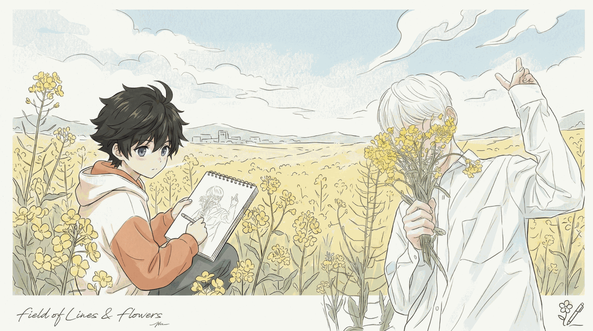

个人记录 / 自由生长NOTES ON A SMALL WORLD
霁风的小圈。
写一些字，
做一些东西，
把喜欢的留在这里。

INDEX
01 / 论文阅读arXiv
Web
IDEAS / EXPERIMENTS / WORK IN PROGRESS
arXiv
Reader
论文自动推送与中文摘要
Python · arXiv↗ 02 / 本地工具Web
coding
浏览器里的本机 CLI Agent 工作台
Node.js · WebSocket↗ 昨天，今天YESTERDAY, TODAY ↗
MUSIC / OBJECTS / LITTLE WORLDS
昨天，今天YESTERDAY, TODAY ↗
MUSIC / OBJECTS / LITTLE WORLDS
继续下滑，向右走 →
BETWEEN THE LINES
线的另一头，
还有一个小小的世界。
THE COLLECTION / 05 WORLDS慢慢看 ↗
01 / WORDS & OBSERVATIONS
写下来的，
就留下了。
随想、阶段复盘和稍微完整一点的技术观察。
2026
05.10
05.10
05.10
随想 / 博客 / 写作把博客重新接上线：
↗
2026把博客重新接上线：
一次内容整理小记
记录一次个人博客重新恢复更新、整理栏目和找回写作入口的过程。
05.10
阶段复盘三月底到五月初：
↗
三月底到五月初：
把零散想法做成可运行的小系统
数学建模内容系统、文旅 Demo、PPT 素材工具与日常工作流的阶段回顾。
文字慢慢积攒，日子也慢慢向前。
现有全部随笔 ↗ 02 / THINGS IN THE MAKING
手边的事，
动手的痕迹。
具体项目、工具流和构建过程。保留中间判断，也记录还没做完的部分。
01 / RESEARCH TOOLarXiv
Reader
Reader
论文自动推送与中文摘要 ↗
降低每天重新打开论文信息流的成本，让论文发现成为稳定流程。
02 / LOCAL WORKSPACEWeb
coding
coding
浏览器里的本机 CLI Agent 工作台 ↗
浏览器负责会话与可视化交互，本机继续运行原有 CLI 工具链。
03 / FIVE LITTLE WORLDS
喜欢的歌，
长成了星球。
五件可以环绕观看的小作品。每一颗，都留着一点自己的情绪。
04 / HELLO, I'M JI_FENG
我是霁风。
欢迎来逛逛。
2026.05.10 / 随想 · 博客 · 写作
把博客重新接上线：
一次内容整理小记
记录一次个人博客重新恢复更新、整理栏目和找回写作入口的过程。
先把入口打开
这次重新整理博客，目标其实很简单：先让它重新变成一个可以持续写东西的地方。
过去一段时间，很多想法都散在不同位置。有些在临时笔记里，有些在项目目录里，有些只停留在聊天框和脑子里。它们不是没有价值，只是没有被放到一个以后还能找回来的地方。
博客断开的时间越久，重新开始时就越容易想“一次性修好所有东西”。但这通常会变成新的拖延。所以这次我给自己的要求很克制：不追求完整重构，先恢复内容流动。
重新分一下内容位置
目前这个小圈里，内容大概分成几类：
- essay：放随想、阶段复盘和稍微完整一点的技术观察；
- projects：放具体项目、工具流和构建过程；
- memo：放短记录，不要求成文，但要留下当天上下文；
- archive：把历史内容串起来，方便之后回看。
这个分法不复杂，但它对我有用。写之前先判断内容属于哪里，就不用每次重新设计文章形态。
不把博客写成展览柜
我不太想把这里变成一个纯成果展示页。个人博客更适合保留过程感：哪里卡住了，为什么调整，哪些决定只是当时的选择。
很多技术工作真正有价值的部分，并不只在最终版本里，而在那些中间判断里。
博客不一定要很宏大。它可以只是一个稳定的工作台：放下想法，整理路径，给未来的自己留一盏灯。查看完整原文 ↗